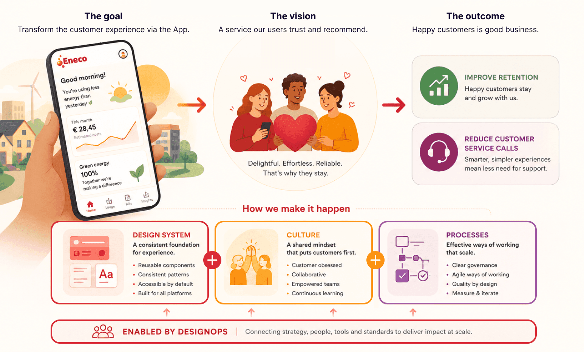
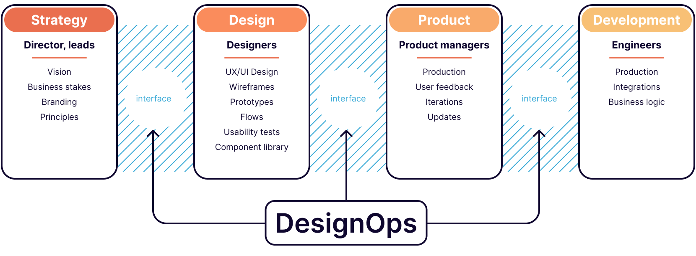
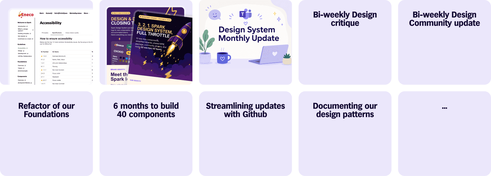
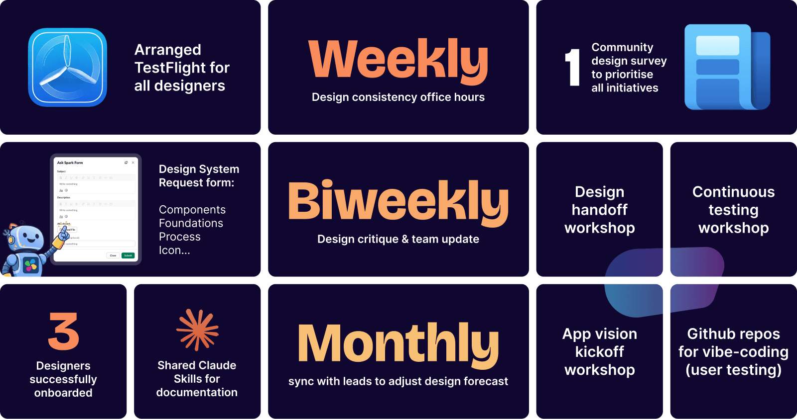

Driving an App-First Transformation through DesignOps
2026
Eneco, Oxxio
Design System Lead
Workshops, Claude Code, React & Compose
When I took ownership of the design system for Oxxio and Eneco, the mission was to rebuild trust at scale. The system became the foundation of an App-first transformation, unifying Web and App experiences while DesignOps established the culture and habits that enabled teams to ship consistently with confidence.
What are Design Operations?
DesignOps makes designers' and developers' lives easier by identifying the best tools, methods, and processes for teams to do their best work. Unlike a design system, which provides the toolkit itself, DesignOps focuses on how teams work: the processes, governance, and collaboration around it.
It brings together the full design lifecycle, workflows, documentation, governance, and quality assurance, creating shared, scalable ways of working across design and engineering.
By reducing repetitive work, DesignOps helps design scale with the business: teams stay aligned and consistent, delivering better experiences faster while supporting goals like retention and fewer support requests.
Problem statement
A fragmented ecosystem with tangled complexity and no clear place to begin.
First week, first signal
The ecosystem I inherited was fragmented and difficult to navigate: 10+ Figma libraries, 4 separate icon
libraries, 2 legacy design systems coexisting with a new one, broken dark mode, inconsistent UI patterns
across platforms, and a significant mismatch between design and code.
Teams were moving fast, but shipping low-quality, inconsistent experiences. The new design system already
lacked credibility. Designers didn't trust it. Developers didn't rely on it. Previous attempts to fix it had
failed, and people remembered. Meanwhile, only ~30% of users relied on the app, and the company was
pushing hard for that number to grow.

My Role
I led the definition and execution of a multi-brand design system supporting Oxxio and Eneco, used by
~40 contributors across design and engineering. My role sat at the intersection of strategy, design, and
operations and owning the system as a product.
This meant defining a roadmap, establishing governance (contribution, validation, versioning), aligning
Figma closely with React and Compose, and driving adoption across teams. While staying hands-on, my goal
was to enable teams to scale the system without depending.
My objectives
- Automate all tokens and icons update and code generation through Github in Q1
- Build the top 30 App components for the App by the end of Q2, as quality examples
- Track the system to demonstrate its value to managers overtime and build trust
- Actively audit design work and arrange weekly sessions to shape the design culture

Symptoms & Frictions
#1 No time to design
Designers created ideas in 1–2 days while developers waited. There was no time for research, problem framing, ideation, or prototyping. Once design was finished, it went straight to implementation without any design review.
#2 No peer review
We believed speed meant skipping exploration. Designers jumped to high-fidelity mockups without evidence, without challenging assumptions. The designer role became a graphics operator, not a problem solver.
#3 Little shared expertise
Designers felt isolated in squads with no time for guilds or knowledge sharing. Peer review for consistency and standards was a luxury we couldn't afford. Time was allocated day-to-day. Designers couldn't say no to product managers
#4 Low-quality delivery
Designers never reviewed code. When designs shipped, they didn't always match the original 100%. We were trying to define the design system while building the app simultaneously.
#5 Design system distrust
In six months, the previous design system team shipped two components. Many compromises, confusing setup, and designers weren't even happy with the results.
Strategy
Drive bold system changes, champion design practice, and unite designers.
01 — A design system the community would trust
The first step was radical simplification. I consolidated 10+ fragmented libraries into one unified,
token-based foundation: semantic color, typography, spacing, and elevation tokens, structured to be
both human-readable and ready to be machine-consumable.
This wasn't just a Figma cleanup. Tokens were mirrored directly in code, making the system
interoperable across React and Compose, and ready for AI-assisted workflows. Multi-brand theming for
Oxxio and Eneco (including light and dark modes) was handled entirely through token overrides, with
zero component duplication. Design and engineering finally spoke the same language.

02 — Removing Ambiguity
I introduced structured governance across three levels. A contribution model defined who could propose,
validate, and merge changes. A validation process introduced quality gates before components reached
production. And versioning rules gave engineers predictable, stable releases to build on.
I also wrote clear guidelines for when to use Material Design vs custom vs native components, with
cross-platform documentation for React and Compose grounded in real use cases, not abstract rules.
Teams stopped debating and started shipping.

03 — Driving Adoption through DesignOps
Building the system was the easy part. Getting 40 contributors across two brands to actually use it:
that was the real challenge.
I treated adoption as a product problem. I made the system visible through monthly demos and internal
newsletters. I made it understandable by simplifying libraries and restructuring Figma files from
scratch. I introduced regular alignment rituals: cross-functional syncs, design reviews, and
retrospectives, to keep design and engineering moving together.
I also stayed close to implementation: reviewing shipped components, flagging drift, and using those
moments to reinforce standards rather than issue mandates. Over time, using the system stopped feeling
like extra work... it became the default.

Setting the Quality Bar
Trust isn't rebuilt through documentation, it's rebuilt through consistently excellent work. I
designed key components myself to set a visible standard, and made deliberate, opinionated decisions
on patterns that had been left ambiguous for too long.
I introduced design system quality gates: structured checkpoints before any component was considered
production-ready, covering accessibility, cross-platform consistency, token compliance, and engineering
alignment. Quality became a shared responsibility, not a solo audit at the end of the process.
Impact
- Design system adoption steadily increased across ~40 contributors (Figma analytics and Github automation)
- The Figma-to-code pipeline reduced design–dev drift significantly.
- AI workflows integrated into production, cutting documentation and review time, allowing us to focus on more valuable activities
- Governance model reduced component duplication and inconsistency across platforms
Learnings
- DesignOps is fundamentally about culture. Process shapes mindset, mindset shapes output
- Senior-level decisions were often political; framing the system as a business asset, not a design tool, was key
- Lack of metrics early on meant relying on qualitative signals, a lesson in instrumenting systems from day one
- Design system now defines the brief AI works with and quality of the output
What's next?
By the end of the year, the App is expected to use 80% of Spark Design System, when the Web platfform will have transitioned by 20%. Company-wide, contribution workflows and deepening AI integrations will automate more of the design-to-code pipeline. The vision is a design system that's not just used by teams, but actively consumed by AI agents, development tools, and automated pipelines.